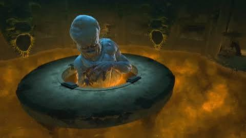

TRIAL MECHANICS
CRADLE OF THE DEATH GOD
Aim the skulls. Jam the gears. Survive the push and pull.

OVERVIEW
CRADLE OF THE DEATH GOD
This 10-player trial begins on a descending elevator before moving into the final arena. Positioning, controlled damage, group coordination and the push-and-pull mechanic are the key parts of the fight.
PHASE ONE
SKULLS & ACERERAK
- A skull appears on the opposite side of the elevator from Acererak and becomes tethered to one player.
- The tethered player should move toward Acererak so the skull lines up with him.
- Another player should position behind the skull and damage it.
- When the skull reaches zero health, the final hit launches it away from the player who struck it.
- Aim the skull so it launches directly into Acererak.
- Repeat the mechanic until Acererak's health is depleted and he disappears.
- Additional enemies appear between skull phases.
- Watch for enemies capable of heavy knockbacks near the edge of the elevator.
PHASE TWO
GELATINOUS CUBES & GEARS
- The elevator begins falling and the group must jam its gears before time expires.
- A gelatinous cube spawns in the centre and becomes tethered to a player.
- The tethered player must move to one of the four corners of the elevator.
- Allow the cube to follow the tethered player fully into the corner before killing it.
- When killed in the correct position, the cube's remains jam the gears in that corner.
- Repeat the mechanic in all four corners.
- All four sets of gears must be jammed before the timer expires or the group wipes.
FINAL ARENA
DESTROY THE CORDS
- On reaching the final arena, destroy the cords restraining the Atropal.
- Additional enemies spawn near the elevator entrance.
- The tank should control these enemies and keep them away from the players destroying the cords.
- Be especially careful of enemies with strong knockback attacks.
FINAL BOSS
THE ATROPAL
- The Atropal uses several area-of-effect attacks throughout the encounter.
- If an arrow marker appears over you, move away from the group.
- These markers leave large debuff areas behind when they resolve.
- Avoid standing inside the debuff areas because they significantly reduce your damage.
- A large red damaging area also appears during the fight. Move out of it immediately.
GROUP MECHANIC
SHARED DAMAGE
- A player can receive a marker with arrows pointing inward toward them.
- This causes repeated pulses of damage.
- Group together around the marked player.
- The incoming damage is divided between nearby players, allowing the group to survive the mechanic.
KEY MECHANIC
PUSH & PULL
- When the Atropal becomes untargetable and its health bar disappears, prepare for Push & Pull.
- For the pull, move toward the outer edge of the arena.
- When the pull begins, continuously move away from the centre to resist being dragged inward.
- Being pulled into the centre will kill or down you.
- As soon as the pull ends, immediately run toward the inner circle.
- The Atropal then pushes players outward.
- Starting near the inner circle gives you room to resist the push and avoid being thrown from the platform.
- Continue moving toward the centre while the outward push is active.
- Movement abilities can be used as an emergency recovery if you are being pushed too close to the edge.
FINAL PHASE
ACERERAK DPS CHECK
- At approximately 25% Atropal health, the Atropal becomes untargetable.
- Acererak appears on the north side of the platform.
- The group must immediately focus damage on Acererak.
- Watch the Soulmonger meter during this phase.
- If the meter reaches full before enough damage is dealt, the entire group is killed.
- Burn Acererak down before the meter fills to complete the DPS check.
QUICK REFERENCE
DON'T GET YEETED
- Tethered skull → line it up with Acererak.
- Hit the skull from behind to launch it into him.
- Cube tether → take it fully into a corner before killing it.
- Jam all four gears before the timer expires.
- Arrow marker → move away from the group.
- Shared-damage marker → group up.
- Pull → start outside and run outward.
- Push → start inside and run inward.
- Acererak appears → burn him before Soulmonger fills.